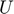
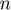
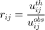
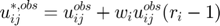
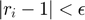

Theoretical background
Contents
Moment tensor inversion
The moment tensor inversion in focimt is a well-known procedure that relies on optimizing the following inverse problem:
where is the n-by-6 matrix containing Green’s function derivatives,  is n-by-1 matrix of ground displacements observed, M is 1-by-6 matrix containing six independent moment tensor components, and  is the number of ground displacement observations. As the above system of equations is overdetermined (it has more observations than unknowns), it is typically solved using the least-squares approach (L2 norm) with the cost function being the sum of squares of residuals. In addition, focimt allows to use the absolute (L1) norm which is less sensitive to larger errors at the cost of significantly increased computation time.
Regardless of the norm used to optimize the equation above, the seismic moment tensor inversion is performed systematically in three different ways assuming unconstrained, as well as constrained deviatoric and double-couple moment tensors. The deviatoric moment tensor solution is obtained by assuming no volumetric change in the resolved moment tensor (i.e. the trace of the resolved moment tensor is equal to zero) during linear inversion. The double-couple constrained moment tensor is resolved by further imposing the determinant of the seismic moment tensor to be zero as well. The latter constraint makes the moment tensor inversion scheme non-linear and the Lagrange multipliers method (Oncescu, 1986) is used to determine the double-couple constrained moment tensor.
The resulting seismic moment tensors are decomposed into isotropic (ISO), compensated linear vector dipole (CLVD) and double-couple (DC) parts following the default decomposition scheme of Knopoff and Randall (1970) with percentage of decomposed tensor elements calculated by either Knopoff and Randall (1970) or Vavrycuk (2001). The isotropic part describes changes in the volume in the seismic source region. The deviatoric part (CLVD+DC) is used to estimate the orientation of tensional, compressional and null axis directions, fault plane orientation as well as slip direction. The uncertainties are provided as RMS errors between recorded and modelled ground displacements and covariance matrix. The fault type is categorized into either strike slip, normal or thrust faulting depending on the relative orientation of cardinal axes of the resolved seismic moment tensor.
Uncertainty assessment
Uncertainties of the estimated moment tensors can be estimated through the normalized root-mean-square (RMS) error between theoretical and estimated amplitudes (Stierle et al., 2014a, 2014b) following the formula:
The application is capable to produce additional solutions calculated from resampled datasets. The number of phases, polarity, the amplitude as well as the takeoff angle may be randomply perturbed and the resampled input phase data will be used to calculate additional momente tensor solution. Having the multiple moment tensor solutions from numerous resamplings of input data, it is possible to calculate the probability density functions of obtained moment tensor characteristics to characterize their uncertainties.
Hybrid moment tensor refinement
Hybrid moment tensor (HMT) technique was originally developed by Andersen (2001). This methodology overall aims at decreasing the influence of local path, site and sensor effects on estimation of seismic moment tensors. Frequently, the knowledge on waveform propagation between the source and receiver is very poor, however the frequency and amplitude content of body waves excited from the source is affected by attenuation, scattering and local site effects resulting in generally unknown Green’s function that can be hardly modelled with typically insufficient information on geological medium. In addition, misinformation on sensor characteristics (e.g. bad gain, reversed polarity) contributes directly to the actually measured ground displacement values leading to the additional bias of resolved seismic moment tensors.
The Hybrid Moment Tensor (HMT) concept is in principle based on the idea of empirical Green’s function technique used in the seismic source tomography for extraction of the relative source time function or kinematic source inversion. In this method the small seismic event is used as an approximation of the Green's function and it is used to deconvolve the propagation, site and sensor effects from the recorded seismogram of the investigated earthquake. However, the eGf candidate and investigated earthquake must share certain source properties (Kwiatek, 2008) in order to not introduce further errors into the deconvolution procedure.
The HMT technique is performed for a selected cluster of seismic events located close enough in comparison to the source-receiver distances. This means the earthquakes forming a cluster should share similar travel paths of body waves from seismic sources to sensor and we may assume the invariance of Green’s function between events forming a cluster and a particular station.
The HMT technique is an iterative procedure. In the first step, the seismic moment tensor inversion is performed for all seismic event forming the cluster using the provided input data. In the following, the resulting seismic moment tensors (i.e. the components of seismic moment tensor) are used to predict the amplitudes (moments) at each sensors for all events. The ratios:

are formed for the synthetic and observed amplitudes (seismic moments) for each station  and event . Then, the median ratios are calculated for each sensor separately. The median ratio at station is used to update the input ground displacement amplitudes using the following scheme:
and event . Then, the median ratios are calculated for each sensor separately. The median ratio at station is used to update the input ground displacement amplitudes using the following scheme:

where is the weighting factor for each station. The updated ground displacement data are used to calculate a new set of seismic moment tensors. The procedure is repeated until the ratio correction factor becomes insignificant (Andersen, 2001):

Applicability
The HMT technique is a useful tool to improve the quality of seismic moment tensor solutions coming from earthquakes forming a tight cluster. The algorithm can detect the inappropriate gain/coupling of certain station(s) and provide the station corrections factors. However, the algorithm is NOT capable to detect the inapropriate station polarity.
References
Andersen, L. M. (2001). A relative moment tensor inversion technique applied to seismicity induced by mining, Univ. of the Witwatersrand, Johannesburg.
Fitch, T. J., D. W. McCowan, and M. W. Shields (1980). Estimation of seismic moment tensor from teleseismic body wave data with application to intraplate and mantle earthquakes, J. Geophys. Res. 85, 3817–3828.
Knopoff, L., and M. J. Randall (1970). The compensated linear-vector dipole. A possible mechanism for deep earthquakes, J. Geophys. Res. 75, 1957–1963.
Oncescu, M. C. (1986). Relative seismic moment tensor determination for Vrancea intermediate depth earthquakes, Pure Appl. Geophys. 124, 931–940.
Stierle, E., V. Vavryèuk, J. Šílený, and M. Bohnhoff (2014). Resolution of non-double-couple components in the seismic moment tensor using regional networks—I: a synthetic case study, Geophys. J. Int. doi 10.1093/gji/ggt502. [online] Available from: http://gji.oxfordjournals.org/content/early/2014/01/13/gji.ggt502.abstract
Stierle, E., M. Bohnhoff, and V. Vavryèuk (2014). Resolution of non-double-couple components in the seismic moment tensor using regional networks—II: application to aftershocks of the 1999 Mw 7.4 Izmit earthquake, Geophys. J. Int. doi 10.1093/gji/ggt503. [online] Available from: http://gji.oxfordjournals.org/content/early/2014/01/13/gji.ggt503.abstract
Vavrycuk, V. (2001). Inversion for parameters of tensile earthquakes, J. Geophys. Res. 106, no. B8, 16339–16355, doi 10.1029/2001JB000372.
Wiejacz, P. (1992). Badanie mechanizmów wstrz?sów górniczych przy wykorzystaniu tensora momentu sejsmicznego, Institute of Geophysics, Polish Academy of Sciences.